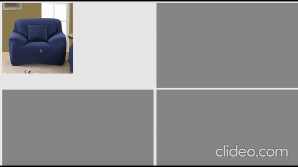

News
13 Oct 2019
Our book chapter proposal, "Deep Learning for Medical Image Segmentation," for the upcoming book, "Deep Learning Applications in Medical Imaging." at IGI Global got accepted.
4th Jan 2020
Our paper "DenseFNet: Dense Encoder-Decoder Network with Focal Loss for Salience Object Detection" draft is ready for submission at ECCV 2020
|
Kanchan Sarkar
Senior Data Scientist
Shopee Singapore Private Limited
Master of Technology
Indian Institute of Technology, Bombay
#297-38 Bukit Batok Street 22, Singapore - 650297
kanchan.besu@gmail.com
|
Education
| Indian Institute of Technology, Bombay Master in Computer Science and Engineering • July 2014 - June 2016 • CPI: 8.16/10 Advisor: Prof. Mythili Vutukuru |
| Indian Institute of Engineering Science and Technology, Shibpur Bachelor in Information Technology • Aug 2010 - June 2013 • CPI: 8.27/10 Advisor: Prof. Sukanta Das |
Experiences
| Senior Data Scientist, Shopee Singapore, Mar 2019 - Present • Building tools for AI-driven personalize (recommendation) auto Poster/Campaign/Banner generation to reduce the manual effort of the design team. • Building detection and segmentation model for few thousands of product types to incorporate in the image search (product discovery) on Shopee platform (Apps). • Experience in computer vision and image processing algorithms, such as image composition, segmentation, image matting, object detection, tracking, and classification. |
| Data Engineer (Data Semantics - Data Science), DataWeave Bangalore, India , Jan 2017 - Dec 2018 (2 Years) • Product Matching in E-Commerce: Developed text and image based deep learning model for finding similar products across thousands of e-commerce stores containing millions of products. Text based mapping in- cludes classification of products based on their normalized attribute features. Image based mapping includes image prepossessing (background removal, object detection, upper and lower body detection) and image classification (using CNN, imagenet and inception v3). This is the most revenue generating product at Dataweave and I am leading the semantics part of this product from end-to-end. • Sentiment Analysis and Product Review Summarization: Have wide knowledge of sentiment analysis and summarization of product re- views. Developed deep learning based model for multi-document product review summarization. • Description Parsing: Working on Deep Learning model for product description parsing. In e-commerce platform description of a product is written in plain text which is the rich source of product metadata. This description is error-prone, unstructured and noisy. Building deep learning model for parsing product description to extract meaning full information and product specifications. • Attribute Tagging: Working on Deep Learning based Name Entity Recognition model for tagging different attributes of e-commerce products. Using combination of LSTM and Knowledge Graph for this purpose. |
| Member of Technical Staff , Riverbed India Pvt. Ltd (R&D Lab Bangalore), July 2016 - Jan 2017 • Experience in: C++, Python, Hyper-v, Microsoft Azure. • Job profile: Developer at SteelFusion product team. • Worked on design of virtual granite core (SteelFusion for virtual plat- form) for Hyper-V. |
| DataStage Specialist , IBM India Pvt. Ltd (IBM Global Business Service), Nov 2013 - July 2014 • Experience in: InfoSphere DataStage v8.5,IBM DB2. • Job profile: Build Datastage jobs.Cleanse and transform the data as per business logic. Designed and build shell script utility to automate the tasks for running DataStage batches. |
Publications
In the Year of 2019:|  |
Routing Micro-videos via A Temporal Graph-guided Recommendation System
Yongqi Li, Meng Liu, Jianhua Yin, Chaoran Cui, Xinshun-Xu & Liqiang Nie ACM MM 2019 (Full) • Codes&Data |
Projects
|
Chinese Idiom Reading Comprehension Contest
- Rank 25/157 - Codes |
|
Learning to Score Diving Sports
- Second Prize, 2017 Intel Cup National Collegiate Software Innovation Contest - Codes |
|
Smart Medical Kit
- First Prize, Qilu software competition - Third Prize, National Collegiate digital media technology works competition - Codes |
Patent
|
Routing Micro-videos via A Temporal Graph-guided Recommendation System (applying)
- Meng Liu, Liqiang Nie, Yongqi Li, Jianhua Yin, Tian Gan and Xuemeng Song |
|
Explicit Interaction Model towards Text Classification (applying)
- Cunxiao Du, Fuli Feng, Zhaozheng Chen, Yongqi Li, Xuemeng Song and Liqiang Nie |
|
Learning to Score Diving Sports (ZL 2018 1 1030493.8)
- Yongqi Li, Cunxiao Du, Junyu Lin, Tian Gan, Xuemeng Song and Liqiang Nie |
Honors
|
Second Prize, 2017 Intel Cup National Collegiate Software Innovation Contest First Prize, Qilu software competition Third Prize, National Collegiate digital media technology works competition Second Prize, China Undergraduate Mathematical Contest in Modeling Mathematical Contest in Modeling Honourable Mention National Encouragement Scholarship |
Last update: Oct 8, 2019. Webpage template borrows from Xiang Wang.